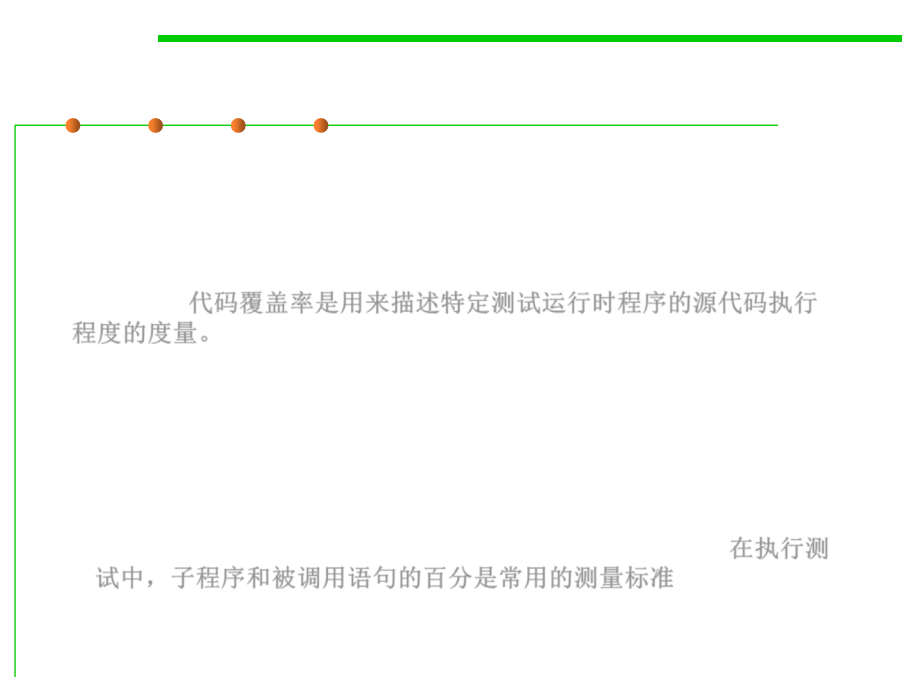

Code coverage
7.5 Testing and Test-First Programming
▪ White-box testing should consider the code coverage of the test case
for the internal logic of the program.
▪ Code coverage is a measure used to describe the degree to which
the source code of a program is executed when a particular test
suite runs.代码覆盖率是用来描述特定测试运行时程序的源代码执行
程度的度量。
– A program with high code coverage, measured as a percentage, has had
more of its source code executed during testing which suggests it has a
lower chance of containing undetected software bugs compared to a
program with low code coverage.
– Many different metrics can be used to calculate code coverage; some of the
most basic are the percentage of program subroutines and the percentage
of program statements called during execution of the test suite. 在执行测
试中，子程序和被调用语句的百分是常用的测量标准